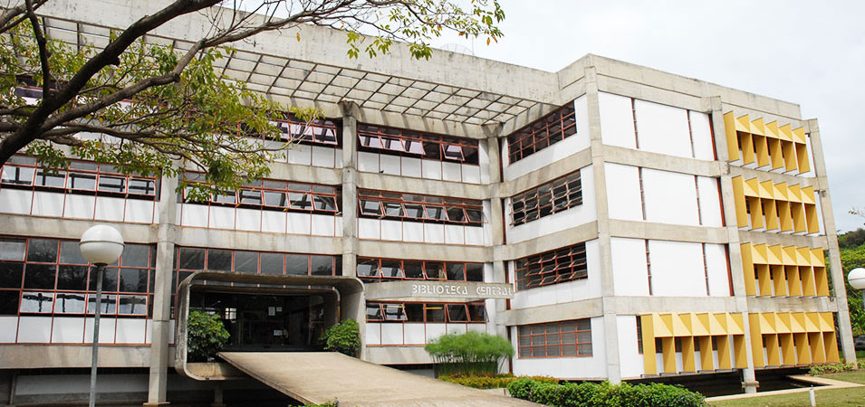
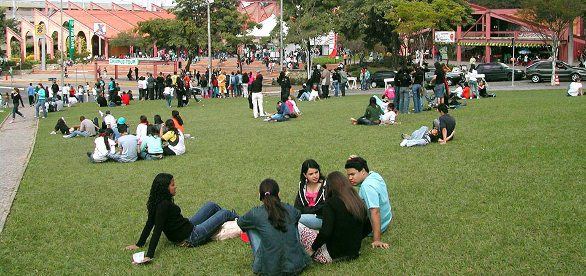

About UFMG






The first higher level academic institutions in Minas Gerais were established in the former state capital Ouro Preto. The first institutions were the School of Pharmacy, founded in 1839; the School of Mining, founded in 1875; and the College of Law, founded in 1892 during the Republican Era.
In 1898, with the transfer of the state capital from Ouro Preto to Belo Horizonte, the College of Law was relocated to the new capital. Afterwards, in 1907, the Free School of Dentistry was founded and in 1911 both the College of Medicine and the School of Engineering were established in Belo Horizonte. Furthermore, in 1911 the Schools of Pharmacy and Dentistry were merged.
The calls for the creation of a University in Minas Gerais had existed since the era of the Inconfidência Mineiro, a political revolt in the late 1700s. However, the idea only became a reality in 1927 with the founding of the University of Minas Gerais (UMG), a private institution subsidized by the state and resulting from the merging of the four already existing schools and colleges in Belo Horizonte. UMG remained a state level university until 1949, when it was federalized.
In the 1940s plans were drawn to collectivize and establish new faculties and colleges of the University on one campus, and the location chosen for the University’s future expansion was a site called University City in the Pampulha neighborhood of Belo Horizonte. The Institute of Mechanics (now Technical College) and the rectory were the first buildings built on the new campus. In the 1960s the University City complex was further developed with the construction of many of the buildings which now house the majority of the University’s academic departments.
The current name, the Federal University of Minas Gerais (UFMG), was officially adopted in 1965.
During the period of Federalization, the School of Architecture and both of the Colleges of Philosophy and Economic Sciences had already merged with UFMG. Afterwards, resulting from expansion and diversification, the University incorporated and created new departments and programs, such as: the School of Nursing (1950), the School of Veterinary Sciences (1961), the Mineiro Conservatory of Music (1962), the School of Library Science (1962), the School of Fine Arts (1963), and the School of Physical Education (1969).
In 1968, the university underwent organizational restructuring which resulted in the breakup of the College of Philosophy into various institutions, such as: the College of Philosophy and Human Sciences, the Institute of Exact Sciences, the Institute of Geoscience, the College of Literature, and the College of Education. Furthermore, the professional schools such as the School of Engineering, the College of Medicine, and the College of Pharmacy and Dentistry ceded their professors, libraries and laboratories of basic discipline to the main campus of UFMG.
Today with an established reputation in the whole country, UFMG continues to expand and hold a prominent position among Brazil’s institutions of higher education as demonstrated in the video below: